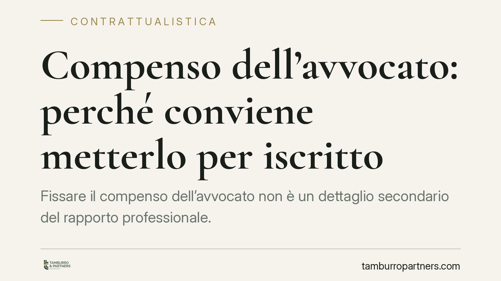

Compenso dell'avvocato: perché conviene metterlo per iscritto
Fissare il compenso dell'avvocato non è un dettaglio secondario del rapporto professionale. Tra obbligo di preventivo scritto, parametri ministeriali e rischio di contenzioso sulle parcelle, cliente e legale hanno interesse a definire per iscritto le condizioni economiche fin dall'inizio. Vediamo cosa prevede oggi la normativa e quali cautele adottare in concreto.

Il quadro normativo attuale
Occorre anzitutto sgombrare il campo da un equivoco diffuso. Si legge spesso che i patti sul compenso tra avvocato e cliente sarebbero nulli se non redatti per iscritto, sulla base dell'art. 2233 del codice civile. Non è così, o meglio, non lo è più.
Un obbligo di forma scritta "a pena di nullità" dei patti sul compenso fu effettivamente introdotto dal cosiddetto decreto Bersani (DL 223/2006), ma è stato successivamente abrogato. L'attuale terzo comma dell'art. 2233 c.c. si limita a stabilire che la misura del compenso deve essere adeguata al decoro della professione. Nessun riferimento, dunque, a una forma scritta richiesta per la validità dell'accordo.
La disciplina rilevante per gli avvocati è oggi contenuta altrove. L'art. 13 della L. 247/2012 (legge professionale forense) prevede che il compenso sia pattuito liberamente e che l'avvocato, a richiesta del cliente, comunichi in forma scritta la prevedibile misura del costo della prestazione (il cosiddetto preventivo). In assenza di accordo, il compenso è liquidato secondo i parametri ministeriali fissati dal DM 55/2014, che hanno sostituito le vecchie tariffe forensi, abrogate dal DL 1/2012.
Incarico e compenso: due piani distinti
È importante non confondere due momenti diversi.
Il conferimento dell'incarico può avvenire anche senza atto scritto e persino per comportamenti concludenti: se il cliente si rivolge al professionista e questi comincia a operare per suo conto, il mandato si considera conferito.
La pattuizione del compenso è un piano ulteriore. La legge non impone che sia scritta per essere valida, ma prevede uno specifico obbligo informativo: il cliente ha diritto di ottenere un preventivo scritto. In caso di mancata pattuizione espressa, non c'è nullità del rapporto, ma il compenso verrà determinato applicando i parametri del DM 55/2014.
La forma scritta, quindi, non è condizione di validità dell'accordo, ma è la modalità che meglio protegge entrambe le parti da futuri contrasti sulla parcella.
Implicazioni pratiche
Per il cliente. L'assenza di un accordo scritto non lo espone al pagamento di somme arbitrarie: il compenso resta ancorato ai parametri ministeriali e alla ragionevolezza. Tuttavia, senza un preventivo, è più difficile prevedere l'esborso complessivo e più facile che nascano incomprensioni. Il diritto a richiedere il preventivo scritto è uno strumento di trasparenza che conviene esercitare.
Per l'avvocato. Documentare per iscritto le condizioni economiche riduce sensibilmente il rischio di contestazioni sulla parcella e di procedimenti per la liquidazione giudiziale del compenso. Il preventivo, oltre a rispondere a un dovere deontologico e informativo, è la prova più solida dell'accordo raggiunto.
Su questo terreno la giurisprudenza di legittimità tende a valorizzare la prova scritta dell'accordo: in mancanza, il giudice liquida sulla base dei parametri, con margini di incertezza per entrambe le parti. Chi voglia sottrarsi a tale incertezza deve prevenirla al momento del conferimento dell'incarico.
Cosa fare in concreto
- Definire le condizioni economiche prima dell'avvio dell'attività, indicando criterio di calcolo, eventuali fasi e voci di spesa.
- Richiedere e conservare il preventivo scritto: è un diritto del cliente ai sensi dell'art. 13 L. 247/2012.
- Verificare che il preventivo distingua chiaramente compensi, spese vive e oneri accessori (contributo previdenziale, IVA).
- Specificare come sarà gestito il compenso in caso di conclusione anticipata dell'incarico o di transazione.
- Formalizzare per iscritto ogni variazione dell'accordo iniziale, ad esempio se l'attività si estende oltre quanto previsto.
Una tutela reciproca
Mettere per iscritto le condizioni economiche non è un atto di diffidenza, ma una forma di chiarezza che tutela allo stesso modo il cliente e il professionista. Definire in anticipo cosa ci si aspetta l'uno dall'altro consente di concentrare il rapporto sull'obiettivo che conta: la difesa efficace degli interessi in gioco.
Disclaimer
Contributo informativo a cura di Tamburro & Partners - Avv. Giuseppe Tamburro. Non costituisce parere legale.
Ogni contratto ha il suo equilibrio.
Se vuoi una revisione delle clausole o una redazione su misura, scrivi allo studio. Ti rispondiamo entro un giorno lavorativo.